Scalance Graphic Templates
The following graphic templates are provided with the installation of the Scalance extension.
In Engineering mode, each graphic template displays how the properties monitored through the object model of a specific Scalance device are graphically represented.
In Operating mode, the data of each specific Scalance device is graphically displayed. In particular, by clicking the devices ports on the graphics, it is possible to dynamically obtain the interfaces data in the Interface table on the right of the graphics.
TEM_Scalance_S615_None_001_150
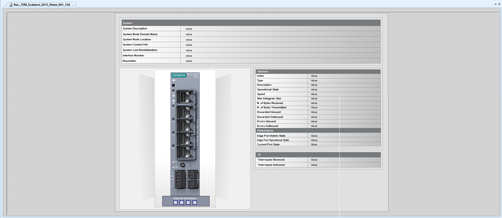
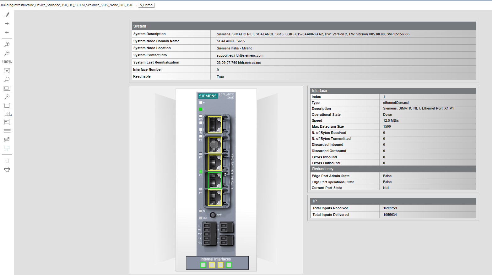
TEM_Scalance_XB-200_None_001_150
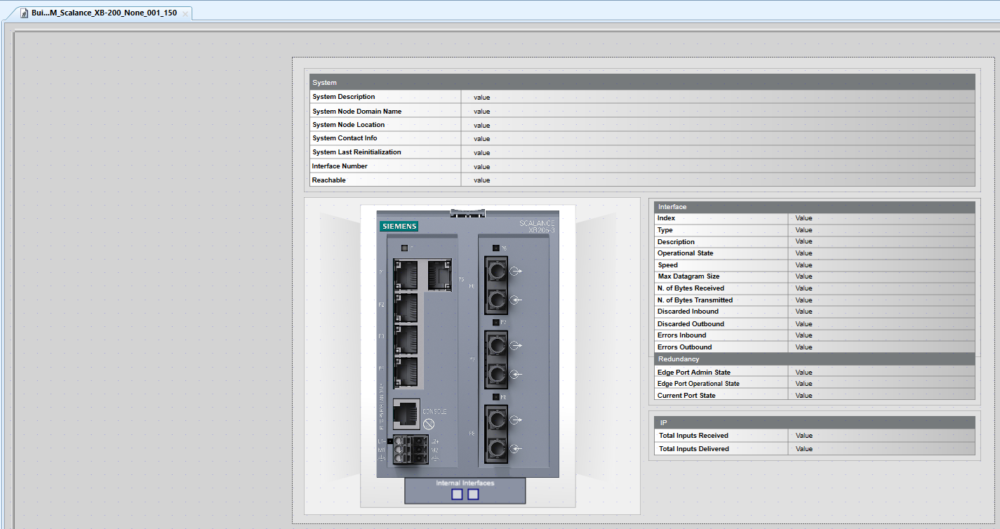
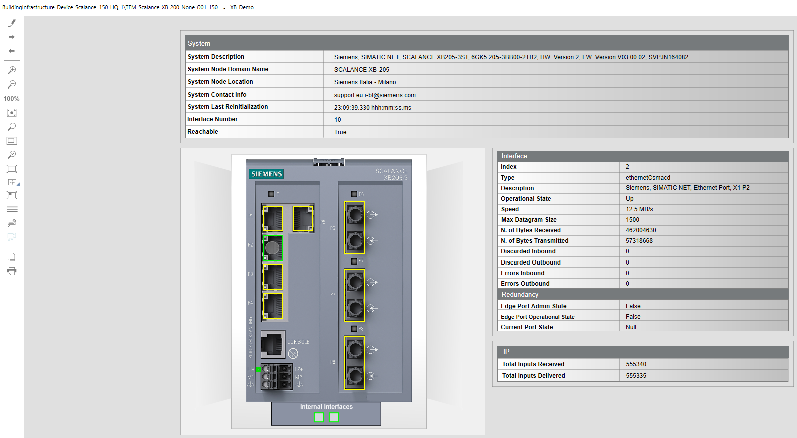
TEM_Scalance_XB-208_None_001_150
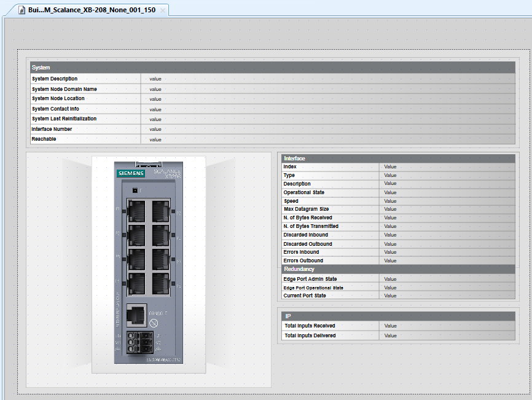
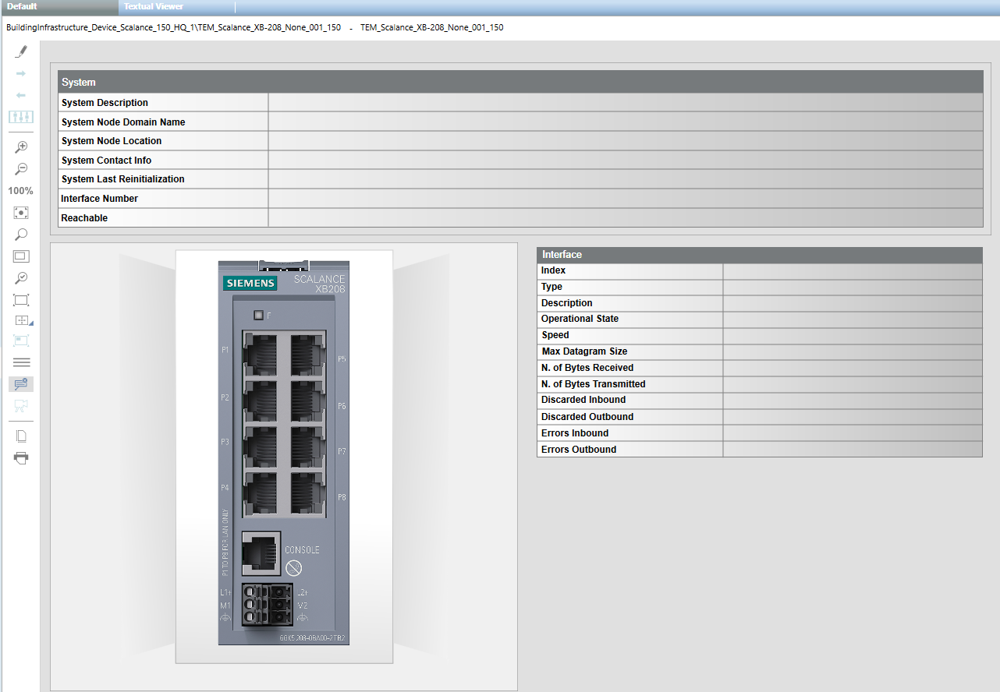
TEM_Scalance_XC-200_None_001_150
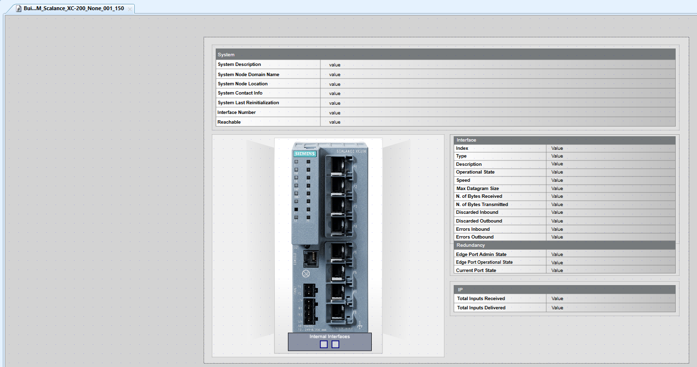
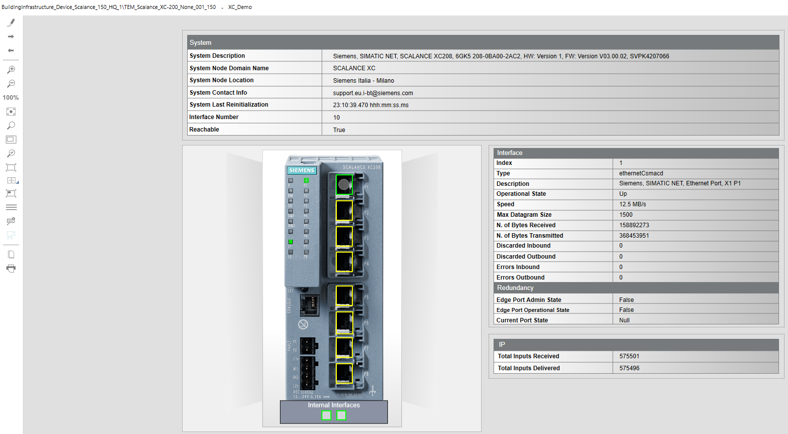
TEM_Scalance_XC-224_None_001_150
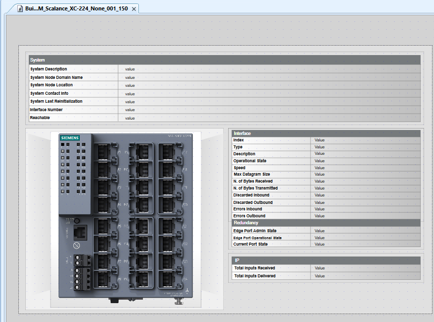
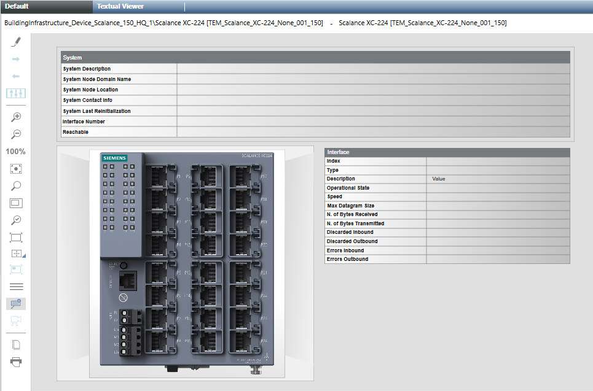
TEM_Scalance_XM-400_None_001_150
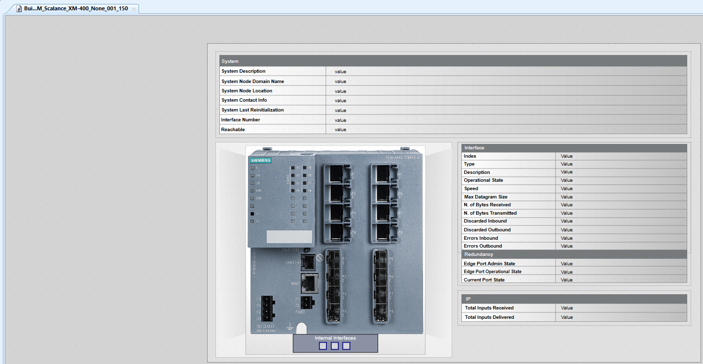
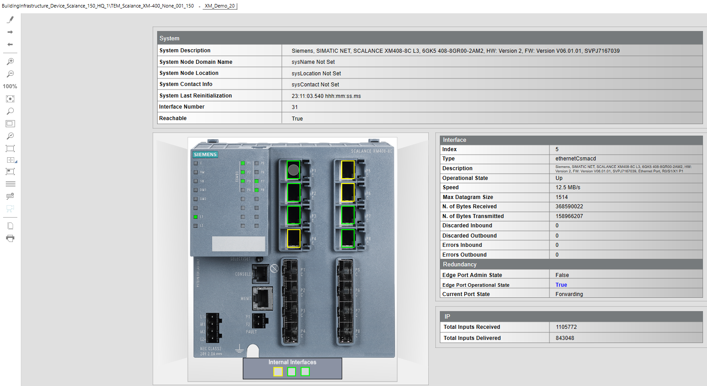